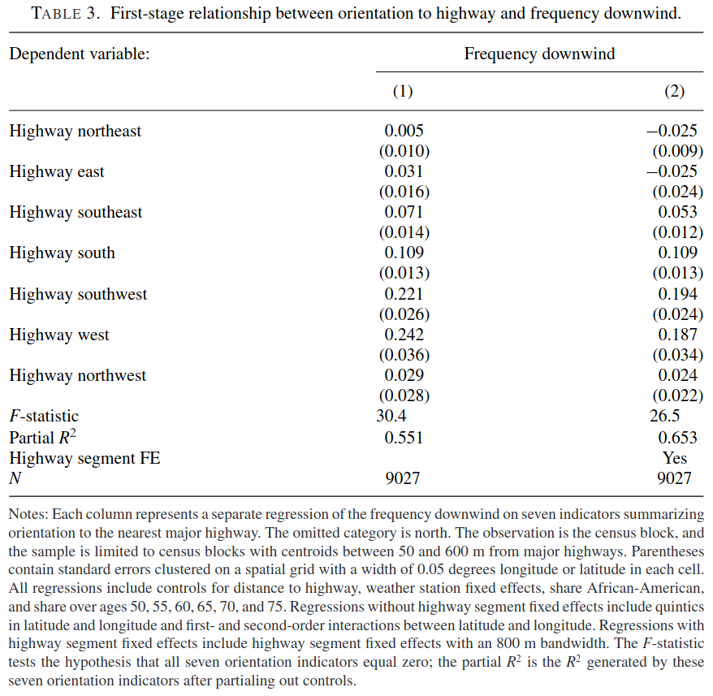
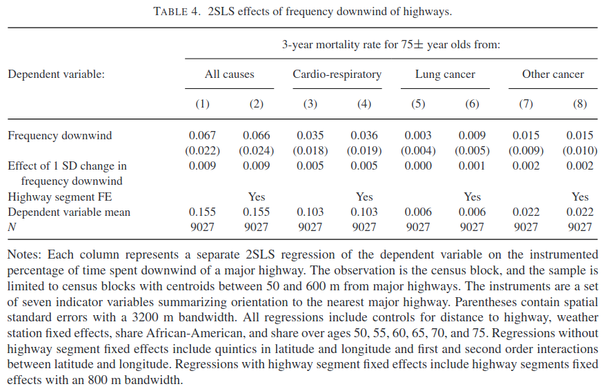

ECON 626: Final - Solutions
\[ \def\R{{\mathbb{R}}} \def\Er{{\mathrm{E}}} \def\var{{\mathrm{Var}}} \newcommand\norm[1]{\left\lVert#1\right\rVert} \def\cov{{\mathrm{Cov}}} \def\En{{\mathbb{E}_n}} \def\rank{{\mathrm{rank}}} \newcommand{\inpr}{ \overset{p^*_{\scriptscriptstyle n}}{\longrightarrow}} \def\inprob{{\,{\buildrel p \over \rightarrow}\,}} \def\indist{\,{\buildrel d \over \rightarrow}\,} \DeclareMathOperator*{\plim}{plim} \]
You have 150 minutes to complete the exam. The last two pages have some possibly useful formulas.
There are 100 total points. There are three questions labeled more difficult that might take longer than others, and you should not spend too much time on these questions until you have answered all the others.
Air Pollution and Mortality
In “As the Wind Blows: The Effects of Long-Term Exposure to Air Pollution on Mortality”, Anderson (2019) estimates the effect of air pollution on mortality and other health outcomes. Anderson uses data on census-block mortality, location, and highway locations to estimate
\[ y_i = \beta w_i + x_i \delta + \epsilon_i \tag{1}\]
“where \(y_i\) represents the three-year mortality rate in census block \(i\) among individuals 75 or older, \(w_i\) represents the fraction of time that census block \(i\) is downwind of a highway, and \(x_i\) represents other covariates. … Covariates in the vector \(x_i\) include distance to the highway, weather station fixed effects, race, and age distribution.” (Anderson 2019)

OLS (5 points)
More difficult
Table 2 shows OLS estimates of Equation 1. The row labeled ``Effect of 1 SD change in frequency downwind’’ reports \(\hat{\beta} \times \sqrt{ \frac{1}{n} \sum_i (w_i - \bar{w})^2}\). Sadly, there are no standard errors reported for these estimates. Find the asymptotic distribution of \(\hat{\beta} \times \sqrt{ \frac{1}{n} \sum_i (w_i - \bar{w})^2}\). To simplify this part, you may pretend that \(x_i\) is not in the model, assume that observations are independent, and assume that \(\Er[\epsilon_i | w_i] = 0\).
Solution. With the simplifications, \(\hat{\beta} = (W'W)^{-1} (W'y)\), and \(\hat{\beta} - \beta = (W'W)^{-1} W'\epsilon\).
Let \(\hat{\sigma}^2 = \frac{1}{n} \sum (w_i - \bar{w})^2\). Assume that the data is iid, \(\Er[w_i^2 \epsilon_i^2] < \infty\) and \(\Er[w_i^4]<\infty\). Then, the CLT applies to \(\hat{\beta}\) and \(\hat{\sigma}^2\), so
\[ \begin{aligned} \sqrt{n} \begin{pmatrix} \hat{\beta} - \beta \\ \hat{\sigma}^2 - \var(w) \end{pmatrix} \indist & N\left(0, \begin{pmatrix} \Er[w^2]^{-2}\var(w\epsilon) & \cov((w_i - \Er[w])^2, \Er[w^2]^{-1}w_i\epsilon_i) \\ & \var((w_i - \Er[w])^2) \end{pmatrix} \right) \\ \indist & N\left(0, \begin{pmatrix} \Er[w^2]^{-2}\var(w\epsilon) & 0 \\ 0 & \var((w_i - \Er[w])^2) \end{pmatrix} \right) \end{aligned} \]
where the second line follows from the assumption that \(\Er[\epsilon|w]=0\).
Now, we can use the delta method on \(f(\beta,\sigma^2) = \beta \sqrt{\sigma^2}\), so \[ \sqrt{n} (\hat{\beta} \sqrt{\hat{\sigma}^2} - \beta\sigma) \indist N\left(0, \sqrt{\sigma^2}\Er[w^2]^{-2} \var(w\epsilon)+ \frac{\beta}{4 \sigma^2} \var((w_i - \Er[w])^4)\right) \]
Endogeneity (5 points)
Give one reason why \(\Er[w_i \epsilon_i]\) might not be zero, and speculate on whether \(\Er[w_i \epsilon_i]\) is likely to be positive or negative.
Solution. Locations near highways are likely cheaper and have lower income residents. Income could also affect mortality directly. Thus, \(w\) could be negatively correlated with income, and income negatively related to mortality. This suggest \(\Er[w_i \epsilon_i] > 0\).
Instrument (5 points)
As an instrument for \(w_i\), Anderson (2019) uses ``orientation to the nearest major highway, [encoded] as a set of seven dummy variables. Each dummy variable represents a 45-degree range (e.g., 22.5 degrees to 67.5 degrees, 67.5 degrees to 112.5 degrees, etc.).’’ Let \(z_i\) denote these instruments. Does this instrument address the reason for endogeneity you gave in the previous part? Do you believe that \(\Er[z_i\epsilon_i] = 0\)?
Solution. No this instrument does not address the possible endogeneity of location. It seems unlikely that \(\Er[z_i \epsilon_i] = 0\).
To be fair to Anderson (2019), he addresses this sort of concern by controlling for location fixed effects, and census block characteristics, including income.
First-Stage (5 points)
Table 3 shows estimates of \[ w_i = z_i \alpha + x_i \gamma + \nu_i \tag{2}\] What important assumption about the instruments can we check with this regression? Should we be concerned about this assumption? What should we do about it?
Solution. We can check for instrument relevance in the first stage. Although, the first stage F-statistic of 30 exceeds the Stock and Yogo (2002) rule of thumb of 10, 30 is now considered too low for standard inference methods to be appropriate. We should use an identification robust inference method. Since the model is overidentified, the KLM or CLR test would be the best choices.
Any answer that mentions weak identification and using identification robust inference is fine here. For example, mentioning just the AR test would okay.
2SLS (5 points)
Table 4 shows 2SLS estimates of Equation 1. One reason Anderson gives for using an instrument is that not all census blocks have weather stations, so there is measurement error in \(w_i\). Is the change in estimates between Table 2 and Table 4 what would be expected from measurement error? (Your answer can freely refer to results shown in lecture or problem sets without proof).
Solution. Yes, this is what we would expect. Measurement error biases OLS towards 0. We generally see that the estimates in Table 2 have smaller magnitude than table 4.
Dependence (5 points)
The observations are from many adjacent census blocks (roughly the same as a city block) in Los Angeles. Briefly, how does this affect the consistency and asymptotic distribution of \(\hat{\beta}\)? What, if anything, in the tables above needs to be calculated differently than with independent observations?
Solution. The observations are likely dependent. As long as the dependence is not too extreme, a LLN will still apply and consistency is unaffected. However, the asymptotic variance will be different than in the independent case. The standard errors should be (and are) adjusted for spatial dependence.


Regression with Estimated Variables
Consider the model, \[ h(Y_i,\alpha) = g(X_i,\theta)'\beta + \epsilon_i \] where \(h\) and \(g\) are known differentiable functions, and the data is i.i.d.
Estimated \(\alpha\) (10 points)
Assume that \(\theta\) is known, \(\Er[\epsilon_i g(X_i,\theta)] = 0\), and \(\Er[\epsilon_i]=0\). Let \(\tilde{X}_i = g(X_i,\theta)\). Assume \(\Er[\tilde{X}_i\tilde{X}_i']\) is nonsingular, and \(\var(\epsilon_i | \tilde{X}_i) = \sigma^2\).
Suppose you have an estimate \(\hat{\alpha}\), such that \(\sqrt{n}(\hat{\alpha}-\alpha) \indist N(0,\Omega)\) and, for simplicity, is independent of \(X\) and \(Y\). Find the asymptotic distribution of \[ \hat{\beta}^{OLS} = (\tilde{X}'\tilde{X})^{-1} \tilde{X}' h(Y,\hat{\alpha}) \] where, \(h(Y,\hat{\alpha}) = \left(h(Y_1,\hat{\alpha}), ..., h(Y_n,\hat{\alpha}) \right)'\)
Hint: consider subtracting and adding \((\tilde{X}'\tilde{X})^{-1}\tilde{X}' h(Y,\alpha)\) to \(\hat{\beta} - \beta\).
Solution. Proceeding as suggested by the hint: \[ \begin{align*} \hat{\beta} - \beta = & (\tilde{X}'\tilde{X})^{-1} \tilde{X}' \left(h(Y, \hat{\alpha}) - h(Y,\alpha) \right) + (\tilde{X}'\tilde{X})^{-1}\tilde{X}' h(Y,\alpha) - \beta \\ = & (\tilde{X}'\tilde{X})^{-1} \tilde{X}' \left(h(Y, \hat{\alpha}) - h(Y,\alpha) \right) + (\tilde{X}'\tilde{X})^{-1}\tilde{X}' \epsilon \\ = & (\tilde{X}'\tilde{X})^{-1} \tilde{X}' \left(D_\alpha h(Y, \alpha)(\hat{\alpha} - \alpha) + \epsilon + o_p(\hat{\alpha}-\alpha) \right) \end{align*} \] where the last line used a first order expansion, and \(D_\alpha(Y,\alpha)\) denotes the \(n \times dim(\alpha)\) matrix of derivatives of \(h\) with respect to \(\alpha\) at each \(Y_i\).
Multiplying by \(\sqrt{n}\), using the convergence of \(\hat{\alpha}\), its independence from \(\epsilon\), and applying a CLT to \(\tilde{X}'\epsilon\), we have \[ \sqrt{n}(\hat{\beta} - \beta) \indist N\left(0, \Er[\tilde{X}_i\tilde{X}_i]^{-1} \Er[\tilde{X}_i D_\alpha h(Y,\alpha)] \Omega \Er[\tilde{X}_i D_\alpha h(Y,\alpha)]'\Er[\tilde{X}_i\tilde{X}_i]^{-1} + \Er[\tilde{X}_i\tilde{X}_i]^{-1} \sigma^2 \right) \]
You need not have made this extra observation, but interestingly, simply ignoring the estimated \(\alpha\) and using the usual heteroskedasticity robust standard error would lead to the same distribution. Doing this, the error terms becomes \(\epsilon + h(Y_i,\hat{\alpha}) - h(Y_i, \alpha)\), and then everything just happens to work out.
Estimated \(\theta\) (5 points)
More difficult
Now, assume \(\alpha\) is known, and suppose you have an estimate \(\hat{\theta}\), such that \(\sqrt{n}(\hat{\theta}-\theta) \indist N(0,\Omega)\) and, for simplicity, is independent of \(X\) and \(Y\). Find the asymptotic distribution of \[ \hat{\beta}^{OLS} = (g(X,\hat{\theta})'g(X,\hat{\theta}))^{-1} g(X,\hat{\theta})' h(Y,\alpha) \]
Hint: adding and subtracting is useful here too. Note that: \[ \begin{aligned} g(X,\hat{\theta})'g(X,\hat{\theta}))^{-1} g(X,\hat{\theta})' h(Y,\alpha) = & \left[(g(X,\hat{\theta})'g(X,\hat{\theta}))^{-1} - (g(X,\theta)'g(X,\theta))^{-1} \right]g(X,\hat{\theta})' h(Y,\alpha) + \\ & + (g(X,\theta)'g(X,\theta))^{-1} \left[g(X,\hat{\theta}) - g(X,\theta)\right]'h(Y,\alpha) + (g(X,\theta)'g(X,\theta))^{-1} g(X,\theta) h(Y,\alpha) \end{aligned} \]
Solution. The idea here is very similar to part a, but the notation gets heavy.
\(g(X,\theta)\) is already a matrix, and we haven’t defined a way to denote the derivative of a matrix. Here, I’ll just write everything in terms of partial derivatives with respect to components of \(\theta\), which avoids the problem.
Using the hint, we have \[ \begin{aligned} \hat{\beta} - \beta = & \left[(g(X,\hat{\theta})'g(X,\hat{\theta}))^{-1} - (g(X,\theta)'g(X,\theta))^{-1} \right]g(X,\hat{\theta})' h(Y,\alpha) + \\ & + (g(X,\theta)'g(X,\theta))^{-1} \left[g(X,\hat{\theta}) - g(X,\theta)\right]'h(Y,\alpha) + \\ & + (g(X,\theta)'g(X,\theta))^{-1} g(X,\theta) \epsilon \\ = & \left[\sum_{j=1}^J (\hat{\theta}_j - \theta_j) \underbrace{(-2) (g(X,\theta)'g(X,\theta))^{-1} \frac{\partial g(X,\theta)}{\partial \theta_j}' g(X,\theta) (g(X,\theta)'g(X,\theta))^{-1}}_{\equiv D_{j}^{gg-}} + o_p(\hat{\theta} - \theta)\right]g(X,\hat{\theta})' h(Y,\alpha) + \\ & + (g(X,\theta)'g(X,\theta))^{-1} \left[\sum_{j=1}^J \frac{\partial g(X,\theta)}{\partial \theta_j}(\hat{\theta}_j - \theta_j) + o_p(\hat{\theta} - \theta)\right]'h(Y,\alpha) + \\ & + (g(X,\theta)'g(X,\theta))^{-1} g(X,\theta) \epsilon \\ \end{aligned} \] \[ \begin{aligned} \indist & N\left(0, \sum_{j=1}^J \sum_{\ell=1}^J \omega_{j,l} \left( \begin{array}{l} \Er[D^{gg-}_j] \Er[g(X,\theta)'h(Y,\alpha)] \Er[g(X,\theta)'h(Y,\alpha)]'\Er[D^{gg-}_\ell]' + \\ + \Er[g(X,\theta)'g(X,\theta)]^{-1} \Er[\frac{\partial g(X,\theta)}{\partial \theta_j}'h(Y,\alpha)] \Er[\frac{\partial g(X,\theta)}{\partial \theta_\ell}'h(Y,\alpha)] \Er[g(X,\theta)'g(X,\theta)]^{-1} \end{array} \right) + \Er[g(X,\theta)'g(X,\theta)]^{-1} \sigma^2 \right) \end{aligned} \] where \(\omega_{j,\ell}\) are the entries of \(\Omega\).
Series Regression with Endogeneity
Suppose \[ y_i = \beta_0 + \beta_1 \cos(x_i) + \beta_2 \cos(2 x_i) + \cdots + \beta_k \cos(k x_i) + u_i \] where \(x_i \in \R\)
Instrument (9 points)
You suspect \(x_i\) is related to \(u_i\), but you have another variable, \(z_i \in \R\), such that \(\Er[u_i | z_i] = 0\). Use this assumption to construct an estimator for \(\beta = (\beta_0, \cdots, \beta_k)'\).
Solution. Mean independence, \(\Er[u_i | z_i] = 0\) , implies \(\Er[u_i f(z_i)] = 0\) for any function \(f\). Since the model has \(k+1\) parameters, we should choose at least \(k+1\) functions to use. For concreteness, let \[ Z_i = \left(1, \cos(z_i), \cos(2z_i), \cdots \cos(k z_i) \right)' \] and use the usual IV estimator, \[ \hat{\beta} = (Z'X)^{-1}(Z'y) \] where \(X\) is defined similarly as \(Z\).
For this to identify \(\beta\), we must also assume relevance, \(\rank(\Er[Z_i X_i']) = k+1\).
Consistency (9 points)
Show that your estimator from part a is consistent.1 State any additional assumptions.
Solution. Substituting the model in for \(y\), we have \[ \begin{align*} \hat{\beta} = & \beta + (Z'X)^{-1}(Z'u) \\ \hat{\beta} = & \beta + (\frac{1}{n}Z'X)^{-1}(\frac{1}{n} Z'u) \\ \plim \hat{\beta} = & \beta \end{align*} \] where, for the last line, we need an LLN to apply to \(Z'X\) and \(Z'u\). For this, it is sufficient that data be i.i.d. and \(\Er[\norm{Z_i X_i'}]\) and \(\Er[\norm{Z_i u_i}]\) are finite. We also need the relevance condition as in part a.
Asymptotic Distribution (9 points)
Find the asymptotic distribution of your estimator from part a.2 State any additional assumptions.
Solution. As in the previous part, \[ \begin{align*} \sqrt{n}(\hat{\beta} - \beta) = & (\frac{1}{n}Z'X)^{-1}(\frac{1}{\sqrt{n}} Z'u) \\ \indist & N\left(0, \Er[Z_i X_i']^{-1} \Er[Z_iZ_i'u_i^2] \Er[X_i Z_i']^{-1} \right) \end{align*} \] where we again need an LLN for \(Z'X\) and the CLT to apply to \(Z'u\). A sufficient assumption, along with what was assumed for previous parts, is that \(\Er[\norm{Z_i u_i}^2]\) is finite.
Convergence Rate (3 points)
More difficult
Suppose now that \(k\) increases with \(n\). To simplify, assume that \(\Er[u_i | x_i] = 0\), and \(x_i \sim U(-\pi,\pi)\), so that \[ \Er[\cos(j x_i)\cos( \ell x_i)] = \begin{cases} 0 & \text{ if } j \neq \ell \\ 1 & \text{ if } j = \ell \end{cases} \]. Let \[ X = \begin{pmatrix} 1 & \cos(x_i) & \cdots & \cos(k x_i) \\ \vdots & & & \vdots \\ 1 & \cos(x_n) & \cdots & \cos(k x_n) \end{pmatrix} \] Find \(c(n,k)\) such that \(\norm{\hat{\beta}^{OLS} - \beta} = O_p(c(n,k))\).
Solution. A technically correct, but not useful answer, would be to give some increasing \(c(n,k)\), like \(c(n,k) = n!k!\). Then \(\norm{\hat{\beta} - \beta}/c(n,k) \inprob 0\), so \(\norm{\hat{\beta} -\beta} = o_p(c(n,k))\) which also implies \(O_p(c(n,k))\). I guess such an answer is fine.
My intention was to ask for the smallest \(c(n,k)\) such that \(\norm{\hat{\beta} -\beta} = O_p(c(n,k))\). Let’s do that.
Note that \[ \begin{aligned} \norm{\hat{\beta} - \beta} = & \norm{(\frac{1}{n} X'X)^{-1}\frac{1}{n}X'u} \\ P\left( \norm{\hat{\beta} - \beta} > a \right) = & P\left( \norm{(\frac{1}{n} X'X)^{-1}\frac{1}{n}X'u} > a \right) \\ \leq & \frac{1}{a^j} \Er\left[\norm{(\frac{1}{n} X'X)^{-1}\frac{1}{n}X'u}^j \right] \end{aligned} \] where the last line follows from Markov’s inequality.
Using the fact that for a square matrix and any vector, \(\norm{A x} \leq \lambda^\max(A) \norm{x}\) where \(\lambda^\max(A)\) is the maximal eigenvalue of \(A\), we have
\[ \begin{aligned} P\left( \norm{\hat{\beta} - \beta} > a \right) \leq & \frac{1}{a^j} \Er\left[\lambda^\max(\frac{1}{n} X'X)^{-j} \norm{\frac{1}{n}X'u}^j \right] \\ \leq & \frac{1}{a^j} \left(\Er\left[\lambda^\max(\frac{1}{n} X'X)^{-2j} \right] \Er\left[\norm{\frac{1}{n} X'u}^{2j}\right] \right)^{1/2} \\ \leq & \frac{1}{a^j} \left(\lambda^\max\left(\Er\left[\frac{1}{n} X'X \right]\right)^{-2j} \Er[\norm{\frac{1}{n} X'u}^{2j}] \right)^{1/2} \\ \leq & \frac{1}{a^j} \left(\Er[(\frac{1}{n^2} u'X X'u)^{j}] \right)^{1/2} \\ \leq & \frac{1}{a} \sqrt{\frac{k \sigma^2}{n}} \end{aligned} \]
where we used the Cauchy-Schwarz inequality, then Jensen’s inequality (\(\lambda^\max(A)^{-1}\) is concave), and then the fact that \(\Er[X'X/n] = I_{k+1}\). Finally, we set \(j=1\).
Thus, we get that \(\norm{\hat{\beta} - \beta} = O_p(\sqrt{k/n})\)
Discrete Measurement Error
Consider the linear model \[ Y_i = \beta X_i^* + \epsilon_i \] with \(\var(X_i^*)>0\), \(\Er[\epsilon_i X_i^*] = 0\), and \(\Er[\epsilon_i]=0\). Furthermore suppose \(X_i^* \in \{0,1\}\), but \(X_i^*\) is unobserved. Instead, you observe \(X_i \in \{0,1\}\) and know that \[ P(X_i = 1 | X_i^* = 1) = P(X_i=0 | X_i^*=0) = p \] where \(p > 1/2\) is unknown.
OLS is Inconsistent (8 points)
Let \(\hat{\beta}^{OLS} = \frac{\sum X_i Y_i}{\sum X_i^2}\) be the least squares estimator. Let \(\pi = P(X_i^*=1)\). Compute \(\plim \hat{\beta}^{OLS}\) in terms of \(p\), \(\pi\), and \(\beta\).
Solution. \[ \begin{aligned} \plim \hat{\beta}^{OLS} = & \plim \frac{\sum X_i Y_i}{\sum X_i^2} \\ = & \plim \frac{\sum X_i (X_i^* \beta + \epsilon_i)}{\sum X_i^2} \\ = & \frac{\Er[X_i X_i^*]}{\Er[X_i^2]} \beta \\ = & \frac{\Er[X_i | X_i^*=1]P(X_i^*=1)}{P(X_i=1)} \beta \\ = & \frac{p \pi}{P(X_i=1|X_i^*=1)P(X_i^*=1) + P(X_i=1|X_i^*=0)P(X_i^*=0)} \beta \\ = & \frac{p \pi}{p \pi + (1-p)(1-\pi)} \beta \end{aligned} \]
Instrument? (8 points)
Suppose you also observe \(Z_i \in \{0,1\}\) with \[ P(Z_i = 1 | X_i^* = 1) = P(Z_i=0 | X_i^*=0) = q \] where \(q>1/2\), and \(Z_i\) and \(X_i\) are independent conditional on \(X_i^*\). Let \(\hat{\beta}^{IV} = \frac{\sum Z_i Y_i}{\sum Z_i X_i}\) be the instrumental variable estimator. Compute \(\plim \hat{\beta}^{IV}\)
Solution. \[ \begin{aligned} \plim \hat{\beta}^{OLS} = & \plim \frac{\sum Z_i Y_i}{\sum Z_i X_i} \\ = & \plim \frac{\sum Z_i (X_i^* \beta + \epsilon_i)}{\sum Z_i X_i} \\ = & \frac{\Er[Z_i X_i^*]}{\Er[Z_i X_i]} \beta \\ = & \frac{q \pi}{pq \pi + (1-p)(1-q)(1-\pi)} \beta \end{aligned} \]
So with this form of classification error, neither OLS nor IV is consistent.
Or Something Else? (9 points)
Describe how \(X\), \(Y\), and \(Z\) could be used to estimate \(\beta\).
Hint: think of \(\beta\), \(p\), \(q\), and \(\pi = P(X^*_i = 1)\) as four parameters to estimate, and come up with four moment conditions that involve these parameters.
Solution. The idea here is to use GMM. There are many possible combinations of moments to use. From the previous two parts, we know that \(\Er[X_i Y_i] = p\pi\beta\) and \(\Er[Z_i Y_i] = q \pi \beta\). We also know that \(\Er[X_i] = p \pi + (1-p)(1-\pi)\) and \(\Er[Z_i] = q \pi + (1-q)(1-\pi)\). Hence, we can estimate \(\beta\) by solving \[ \begin{aligned} \En[X_i Y_i] & = \hat{p}\hat{\pi} \hat{\beta} \\ \En[Z_i Y_i] & = \hat{q}\hat{\pi} \hat{\beta} \\ \En[X_i] & = \hat{p} \hat{\pi} + (1-\hat{p})(1-\hat{\pi}) \\ \En[Z_i] & = \hat{q} \hat{\pi} + (1-\hat{q})(1-\hat{\pi}) \end{aligned} \] It’s not clear whether this system of equations has a unique solution. In general, it might not. The restrictions that \(p,q \in [1/2,1]\) and \(\pi \in (0,1)\) might help pin down the correct solution.
Your answer need not have gone any further, but to ensure identification, note that \(\Er[X_i Z_i Y_i] = p q \pi \beta\), so we can identify \(p\) (and \(q\)) by \(\Er[XZY] / \Er[ZY]\). Given \(p\), \(\pi\) can be identified from \(\Er[X_i]\). Given \(p\) and \(\pi\), we can recover \(\beta\) from \(\Er[XY]\). This constructive identification argument can be turned into an estimator by replacing expecations with sample averages.
Definitions and Results
Measure and Probability:
Monotone convergence: If \(f_n:\Omega \to \mathbf{R}\) are measurable, \(f_{n}\geq 0\), and for each \(\omega \in \Omega\), \(f_{n}(\omega )\uparrow f(\omega )\), then \(\int f_{n}d\mu \uparrow \int fd\mu\) as \(n\rightarrow \infty\)
Dominated converegence: If \(f_n:\Omega \to \mathbf{R}\) are measurable, and for each \(\omega \in \Omega\), \(f_{n}(\omega )\rightarrow f(\omega ).\) Furthermore, for some \(g\geq 0\) such that \(\int gd\mu <\infty\), \(|f_{n}|\leq g\) for each \(n\geq 1\). Then, \(\int f_{n}d\mu \rightarrow \int fd\mu\)
Markov’s inequality: \(P(|X|>\epsilon) \leq \frac{\Er[|X|^k]}{\epsilon^k}\) \(\forall \epsilon > 0, k > 0\)
Jensen’s inequality: if \(g\) is convex, then \(g(\Er[X]) \leq \Er[g(X)]\)
Cauchy-Schwarz inequality: \(\left(\Er[XY]\right)^2 \leq \Er[X^2] \Er[Y^2]\)
Conditional expection of \(Y\) given \(\sigma\)-field \(\mathscr{G}\) satisfies \(\int_A \Er[Y|\mathscr{G}] dP = \int_A Y dP\) \(\forall A \in \mathscr{G}\)
Identification \(X\) observed, distribution \(P_X\), probability model \(\mathcal{P}\)
- \(\theta_0 \in \R^k\) is identified in \(\mathcal{P}\) if there exists a known \(\psi: \mathcal{P} \to \R^k\) s.t. \(\theta_0 = \psi(P_X)\)
- \(\mathcal{P} = \{ P(\cdot; s) : s \in S \}\), two structures \(s\) and \(\tilde{s}\) in \(S\) are observationally equivalent if they imply the same distribution for the observed data, i.e. \[ P(B;s) = P(B; \tilde{s}) \] for all \(B \in \sigma(X)\).
- Let \(\lambda: S \to \R^k\), \(\theta\) is observationally equivalent to \(\tilde{\theta}\) if \(\exists s, \tilde{s} \in S\) that are observationally equivalent and \(\theta = \lambda(s)\) and \(\tilde{\theta} = \lambda(\tilde{s})\)
- \(s_0 \in S\) is identified if there is no \(s \neq s_0\) that is observationally equivalent to \(s_0\)
- \(\theta_0\) is identified (in \(S\)) if there is no observationally equivalent \(\theta \neq \theta_0\)
Cramér-Rao Bound: in the parametric model \(P_X \in \{P_\theta: \theta \in \R^d\}\) with likelihood \(\ell(\theta;x)\), if appropriate derivatives and integrals can be interchanged, then for any unbiased estimator \(\tau(X)\), \[ \var_\theta(\tau(X)) \geq I(\theta)^{-1} \] where \(I(\theta) = \int s(x,\theta) s(x,\theta)' dP_\theta(x) = \Er[H(x,\theta)]\) and \(s(x,\theta) = \frac{\partial \log \ell(\theta;x)}{\partial \theta}\)
Hypothesis testing:
- \(P(\text{reject } H_0 | P_x \in \mathcal{P}_0)\)=Type I error rate \(=P_x(C)\)
- \(P(\text{fail to reject } H_0 | P_x \in \mathcal{P}_1)\)=Type II error rate
- \(P(\text{reject } H_0 | P_x \in \mathcal{P}_1)\) = power
- \(\sup_{P_x \in \mathcal{P}_0} P_x(C)\) = size of test
- Neyman-Pearson Lemma: Let \(\Theta = \{0, 1\}\), \(f_0\) and \(f_1\) be densities of \(P_0\) and \(P_1\), \(\tau(x) =f_1(x)/f_0(x)\) and \(C^* =\{x \in X: \tau(x) > c\}\). Then among all tests \(C\) s.t. \(P_0(C) = P_0(C^*)\), \(C^*\) is most powerful.
Projection: \(P_L y \in L\) is the projection of \(y\) on \(L\) if \[ \norm{y - P_L y } = \inf_{w \in L} \norm{y - w} \]
- \(P_L y\) exists, is unique, and is a linear function of \(y\)
- For any \(y_1^* \in L\), \(y_1^* = P_L y\) iff \(y- y_1^* \perp L\)
- \(G = P_L\) iff \(Gy = y \forall y \in L\) and \(Gy = 0 \forall y \in L^\perp\)
- Linear \(G: V \to V\) is a projection map onto its range, \(\mathcal{R}(G)\), iff \(G\) is idempotent and symmetric.
Gauss-Markov: \(Y = \theta + u\) with \(\theta \in L \subset \R^n\), a known subspace. If \(\Er[u] = 0\) and \(\Er[uu'] = \sigma^2 I_n\), then the best linear unbiased estimator (BLUE) of \(a'\theta = a'\hat{\theta}\) where \(\hat{\theta} = P_L y\)
Convergence in probability:
- \(X_1, X_2, ...\) converge in probability to \(Y\) if \(\forall \epsilon > 0\), \(\lim_{n \to \infty} P(\norm{X_n -Y} > \epsilon) = 0\)
- If \(\lim_{n \to \infty} \Er[ \norm{X_n - Y}^p ] \to 0\), then \(X_n \inprob Y\)
- If \(X_n \inprob X\), and \(f\) continuous, then \(f(X_n) \inprob f(X)\)
- Weak LLN: if \(X_1, ..., X_n\) are i.i.d. and \(\Er[X^2]\) exists, then \(\frac{1}{n} \sum_{i=1}^n X_i \inprob \Er[X]\)
- \(X_n = O_p(b_n)\) if \(\forall \epsilon>0\) \(\exists M_\epsilon\) s.t. \(\lim\sup P(\frac{\norm{X_n}}{b_n} \geq M_\epsilon) < \epsilon\)
- \(X_n = o_p(b_n)\) if \(\frac{X_n}{b_n} \inprob 0\)
Convergence in distribution:
- \(X_1, X_2, ...\) converge in distribution to \(X\) if \(\forall f \in \mathcal{C}_b\), \(\Er[f(X_n)] \to \Er[f(X)]\)
- If \(X_n \indist X\) and \(g\) is continuous, then \(g(X_n) \indist g(X)\)
- Slutsky’s lemma: if \(Y_n \inprob c\) and \(X_n \indist X\) and \(g\) is continuious, then \(g(Y_n, X_n) \indist g(c,X)\)
- Levy’s Continuity Theorem: \(X_n \indist X\) iff \(\Er[e^{it'X_n}] \to \Er[e^{it'X}] \forall t\)
- CLT: if \(X_1, ..., X_n\) are i.i.d. with \(\Er[X_1] = \mu\) and \(\var(X_1) = \sigma^2\), then \(\frac{1}{\sqrt{n}} \sum_{i=1}^n \frac{X_i - \mu}{\sigma} \indist N(0,1)\)
- Delta Method: suppose \(\sqrt{n}(\hat{\theta} - \theta_0) \indist S\) and \(h\) is differentiable, then \(\sqrt{n}(h(\hat{\theta}) - h(\theta_0)) \indist \nabla_h(\theta_0) S\)
Asymptotic distribution of OLS:
- Model \(Y_i = X_i'\beta + \epsilon_i\)
- \(\hat{\beta}^OLS = (X'X)^{-1} X'y\)
- If observations are i.i.d., \(\Er[X_i \epsilon] = 0\), \(\Er[X_i X_i'] < \infty\), and \(\Er[X_i X_i' \epsilon_i^2] < \infty\), then \[ \sqrt{n}(\hat{\beta}^{OLS} - \beta) \left((\frac{1}{n} X'X)^{-1} \left( \frac{1}{n} \sum X_i X_i' \hat{\epsilon}_i^2 \right) (\frac{1}{n} X'X)^{-1} \right)^{-1/2} \indist N(0,I) \]
IV
- \(\hat{\beta}^{2SLS} = (X'P_Z X)^{-1} (X' P_Z y)\)
- If observations are i.i.d. \(rank(\Er[X_i Z_i']) = k\), \(\Er[Z_i \epsilon_i] = 0\), \(\Er\norm{X_i}^4 < \infty\), \(\Er\norm{Z_i}^4 < \infty\), \(\Er[\epsilon_i^2 | Z_i] = \sigma^2\), and \(\Er[Z_i Z_i']\) is invertible, then \[ \sqrt{n}(\hat{\beta}^{2SLS} - \beta) \indist N\left(0, \sigma^2 \left\lbrace \Er[X_i Z_i'] \Er[Z_i Z_i']^{-1} \Er[Z_i X_i'] \right\rbrace^{-1} \right) \]
- J-test: under \(H_0: \Er[Z_i(Y-X_i'\beta_0)] = 0\), \[ J = n\left(\frac{1}{n}Z'(y - X\hat{\beta}^{2SLS}) \right)' \hat{C}\left(\frac{1}{n}Z'(y - X\hat{\beta}^{2SLS}) \right) \indist \chi^2_{d-k} \]
- AR-test: under \(H_0: \beta = \beta_0\), \[ AR(\beta) = n\left(\frac{1}{n}Z'(y - X\beta) \right)' \hat{\Sigma}(\beta)^{-1}\left(\frac{1}{n}Z'(y - X\beta) \right) \indist \chi^2_d \]
References
Footnotes
If you could not solve part a, suppose your estimator was \(\hat{\beta} = (W'X)^{-1} (W'y)\) for some \(n \times k+1\) matrix of variables of \(W\).↩︎
If you could not solve part a, suppose your estimator was \(\hat{\beta} = (W'X)^{-1} (W'y)\) for some \(n \times (k+1)\) matrix of variables, \(W\).↩︎